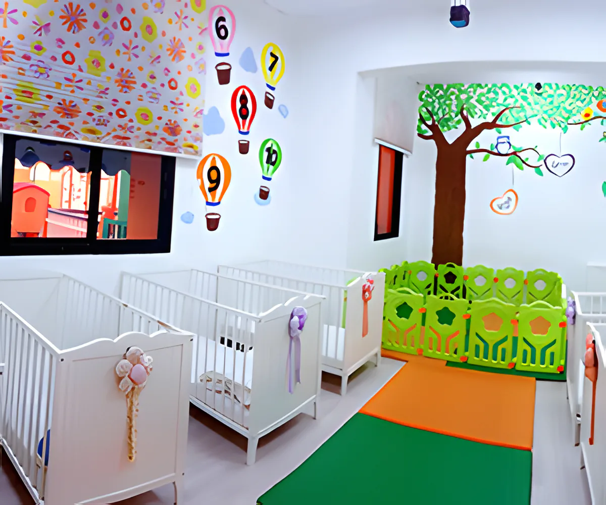

التعلّمباللعب
في حضانة جراندما يتعلم الأطفال بأيديهم، من خلال اللعب والاستكشاف وحواسهم. منهجنا يجمع إطار EYFS مع أساليب منتسوري، لينمو الطفل في التعلّم وفي شخصيته.
- الأعمار
- من شهرين إلى 4 سنوات
- الدوام
- 6:30 صباحاً حتى 6:30 مساءً
- المنهج
- EYFS مع منتسوري
- اللغات
- الإنجليزية والفرنسية والعربية
- الرعاية النهارية
- 2:30 حتى 6:30 مساءً، برسوم إضافية
- التسجيل
- مفتوح طوال العام
مراكز تعلّم الطفل
صُمّمت مراكز تعلّم الطفل لتجعل الأطفال شركاء في تعلّمهم. كل مركز يدعم جانباً من الجوانب الخمسة للطفولة المبكرة.
- 1التواصل واللغةركن حلقة الصباح: المفردات والاستماع والتعبير.
- 2الرياضياتركن الرياضيات والبناء: حل المشكلات والمنطق والإحساس بالأرقام.
- 3الفنونالركن الإبداعي: الخيال والإبداع ومهارات اليد الدقيقة.
- 4النمو الشخصي والاجتماعيركن الاكتشاف: الاستقلالية والعمل الجماعي ومعرفة الذات.
- 5النمو البدنيركن اللياقة: المهارات الحركية والتناسق والعادات الصحية.
غرفة غرفة
01ركن الإنجليزيةبرنامج Jolly Phonics وأصوات الحروف وأول القراءة
يتعرّف الأطفال على اللغة من خلال أنشطة تفاعلية وبرنامج Jolly Phonics، فيتعلمون أصوات الحروف وطريقة كتابتها. سيتعلم الطفل أن:
- يستخدم كلمات وجملاً بسيطة للتواصل
- يتعرّف على الحروف وأصواتها
- يشارك بثقة في الأنشطة الجماعية
- يقرأ اسمه ويكتبه
- يستمتع بالاستماع إلى القصص
- يجيب عن أسئلة بسيطة بثقة متزايدة
02ركن الفرنسية والعربية40 دقيقة لكل لغة يومياً، دون رسوم إضافية
نؤمن بقوة تعلّم أكثر من لغة. يتعرّف الأطفال على الفرنسية والعربية 40 دقيقة كل يوم، فيتعلمون أن:
- يتواصلوا بأكثر من لغة
- يتفاعلوا بسهولة مع أطفال من خلفيات مختلفة
- يقوّوا تركيزهم وذاكرتهم
- يصبحوا متعلّمين منفتحين ومرنين
03ركن الرياضياتالعدّ والأشكال والأنماط
يتعلم الأطفال التعرّف على الأرقام وعدّها وكتابتها وترديدها بالترتيب، ويستكشفون الأشكال والأنماط. وهذا يساعدهم على:
- بناء أساس قوي في الحساب المبكر
- التفكير المنطقي وحل المشكلات
- اكتشاف الأنماط وتكوينها
- التعرّف على الأشكال الأساسية واستخدامها
04ركن الفنعمل فني كل يوم مرتبط بموضوع الأسبوع
يستكشف الأطفال الألوان والأشكال والملمس، مع أعمال يدوية يومية مرتبطة بموضوع الأسبوع. سيتعلم الطفل أن:
- يتعرّف على الألوان ويسمّيها بثقة
- يرسم أشكالاً وتصاميم بسيطة
- يصنع أعمالاً فنية ويدوية متنوعة
- يستخدم الفرشاة والأدوات لتقوية مهارات اليد الدقيقة
05ركن الاكتشافالحواس والاعتماد على النفس والتعاون
أنشطة عملية تساعد الأطفال على النمو اجتماعياً وعاطفياً والاعتماد على أنفسهم. يتعلمون أن:
- يلاحظوا ويستكشفوا بكل حواسهم
- يستخدموا المقص والأدوات بأمان
- يلبسوا ويعتنوا بأنفسهم
- يتدربوا على ربط الأربطة والمهارات الدقيقة
- يتشاركوا وينتظروا دورهم ويتعاونوا
- يعبّروا عن أنفسهم بثقة
06ركن اللياقةالحركة واليوغا والألعاب
النشاط البدني جزء أساسي من النمو. نشجّع الأطفال على أن:
- يمشوا ويقفزوا ويركضوا بتوازن وتحكّم
- يجرّبوا اليوغا وتمارين تقوية الجسم
- يحسّنوا المرونة والتناسق والتحمّل
- يثقوا في قدرات أجسامهم
07غرفة BooBooلأصغر أطفالنا، من عمر شهرين
يحظى الرضّع برعاية دافئة تتبع إيقاعهم الطبيعي: يأكلون حين يجوعون، ويرتاحون حين يتعبون، ويلعبون حين يكونون في نشاط وسعادة. تدعمهم المعلمات بـ:
- الغناء وقراءة القصص واللعب التفاعلي
- اللعب الناعم والوقت في الخارج
- غرفة هادئة ومحبّة للنمو

08ركن اللعب الناعمتسلّق وزحف وقفز بأمان في الداخل
مساحة داخلية آمنة ومحفّزة يتحرك فيها الأطفال بحرية. تساعدهم على:
- بناء القوة والتناسق
- تطوير التوازن والمرونة
- الحركة دون خوف من الإصابة
- الاستمتاع باللعب في مكان آمن

09اللعب في الخارجهواء نقي وأصدقاء وألعاب جديدة
اللعب في الخارج يجعل الأطفال أكثر نشاطاً وتواصلاً وخيالاً. في الخارج، الأطفال:
- يقوّون أجسامهم بالحركة واللعب
- يكوّنون صداقات مع أقرانهم
- يكتشفون ألعاباً جديدة والعمل الجماعي
- تزيد ثقتهم وهم يستمتعون بالهواء الطلق

كل يوم في حضانة جراندما
6:30 صباحاً حتى 6:30 مساءًنستقبل الأطفال من 6:30 صباحاً، من عمر شهرين إلى 4 سنوات.
بعد البرنامج
رعاية نهاريةمن 2:30 حتى 6:30 مساءً، برسوم إضافية. اسألوا فرعكم.
الآن يمكن لطفلك أن يتعلم في منزله المهارات التي يحتاجها للمدرسة. صندوق جراندما صندوق معرفي ينمّي مهارات الطفل ويوسّع مداركه في جو من المرح والتعلّم، للأطفال من سنتين إلى 4 سنوات.
- 1صندوق جديد كل أسبوع، بمواضيع ممتعة في القراءة والرياضيات والإبداع.
- 2يصل إلى باب منزلكم.
- 3فيديو يشرح كل نشاط، ليستفيد طفلكم منه أكثر.
مخيماتنا
- المخيم الشتويمخيمات جراندما على مدار العام
- المخيم الربيعياسألوا فرعكم عن مواعيد هذا الموسم
- المخيم الصيفياتصلوا على 800 2229
الانضمام إلى حضانة جراندما
احجزوا زيارة
اتصلوا على 800 2229 أو راسلوا فرعكم على واتساب ونرتّب لكم زيارة. نتطلع للقائكم.
عبّئوا الاستمارة
استمارة التسجيل متوفرة في الحضانة، والتسجيل مفتوح طوال العام.
أحضروا المستندات
رسوم التسجيل، والبطاقة الشخصية وشهادة الميلاد للطفل، وصورتان شخصيتان، وبطاقة التطعيم، ونسخ البطاقات الشخصية وجوازات سفر الوالدين.